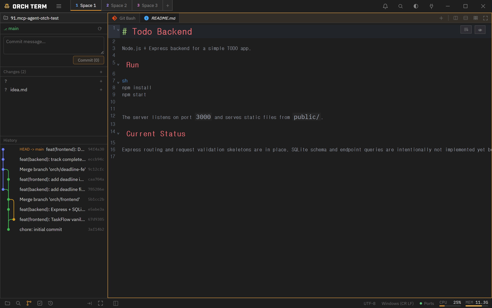
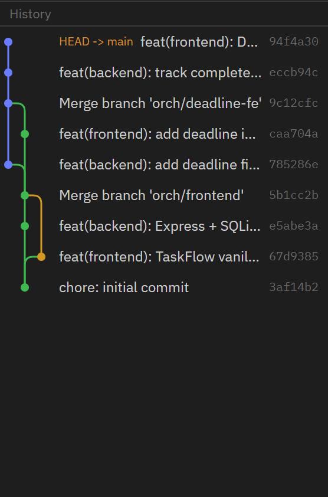
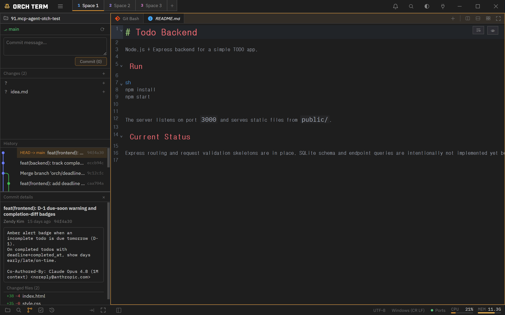
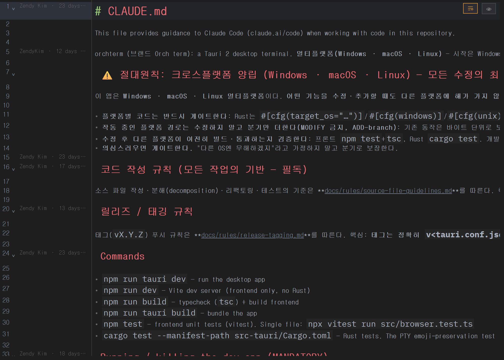

Core features · Source control
Source control (Git)
The sidebar's third mode, Git. Stage and commit changed files, view the branch graph, see commit detail with a side-by-side diff, use GitLens-style blame, and clean up worktrees — all from one panel.
Source Control — stage · commit
Open it with Ctrl+Shift+G or the Git icon in the sidebar mode bar. Stage/unstage files, then write a message and commit. Status letters — M modified · A added · U untracked · D deleted.

Log + branch graph
Shows commits newest→oldest and visualizes branches and merges as a lane graph. Click a row to open the commit detail.

Commit detail + side-by-side diff
Click a commit to open its message, author, time, and changed files. Click a changed file to open a side-by-side (before/after) read-only diff tab in the main panel — including untracked (new) files, reusing a single tab per file.

GitLens-style blame
Toggle it in the editor with Ctrl+Shift+B (or the icon at the top right). The gutter shows per-line author · relative time, and clicking the gutter opens that commit's detail in the Git panel. Lines not yet committed are marked "Uncommitted".

Worktree list · cleanup
When a repository has 2+ git worktrees, the Git panel shows a worktree list — each worktree's name, relative path, and current branch — and lets you clean up (remove) the ones you're done with, right there.
Sidebar layout · maximize
The files·search·git modes share a common header (the project switcher). The three areas — Changes · Log · Commit detail — each scroll independently, and you drag the boundaries to resize them. Maximize the sidebar with the button or Shift+Esc; opening a file restores it automatically.
Keyboard shortcuts
| Key | Action |
|---|---|
| Ctrl+Shift+G | Open the Git panel |
| Ctrl+Shift+B | Toggle blame (when the editor is focused) |
| Shift+Esc | Toggle sidebar maximize |